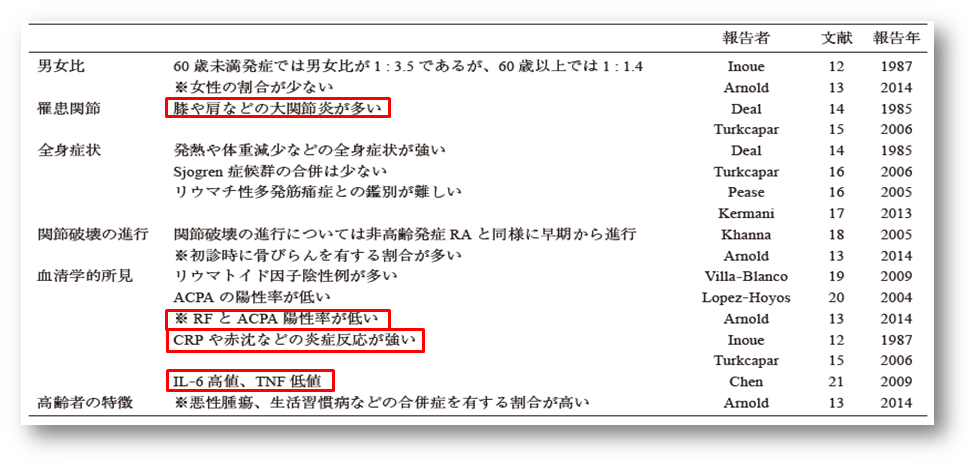

対オレンシア①高齢者
高齢者RAの考え方①
- １）高齢発症RA（EORA）と若年発症高齢RA（YORA）の2タイプに分けられる
- ２）EORAは、罹病期間が短く疾患活動性が高い
- ３）EORAは、セロネガが多い
- ４）YORAは、若年で発症し長期間RAを患っているため、罹病期間が長く、複数のBio製剤使用経験があり、MTXも長期間投与されているコントロール不良例が多い
EORAの特徴

青木昭子,東医大誌75(2)187-194.2017
対オレンシア①高齢者
EORAの特徴
青木昭子,東医大誌75(2)187-194.2017